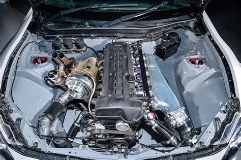
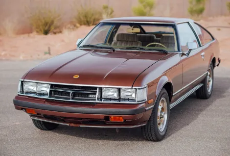
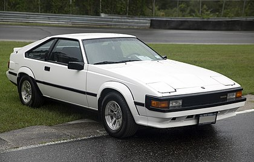
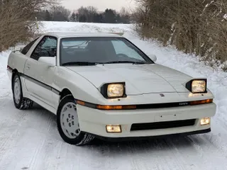

Historia del Supra 🚀
En sus comienzos derivaba del Toyota Celica, aunque ligeramente más largo y amplio. A partir de mediados de 1986, la tercera generación del Supra pasó a ser un modelo propio. El Supra también tiene sus raíces en el Toyota 2000GT, siendo el motor su principal ejemplo. Las tres primeras generaciones se ofrecieron con un descendiente directo a la M 2000GT del motor. Todas las generaciones del Supra tienen un motor de seis cilindros en línea. Junto con este nombre y el automóvil, se creó el logotipo propio del Supra, derivado del logo original del Celica, siendo de color azul en lugar de naranja. Este fue utilizado hasta enero de 2004, cuando la tercera generación del Supra fue presentada. El nuevo logo fue similar en tamaño, de color naranja con la escritura sobre un fondo rojo, pero sin el diseño de barco vikingo. A su vez, lo utilizaron hasta el 2 de octubre de 1989 cuando fue rediseñado y cambiado a su actual forma oval de la empresa. Este modelo se dejó de comercializar en los Estados Unidos en 1999; y en Japón en 2005.
Orígenes:
(1978-1986)
El Supra comenzó como una versión más larga y potente del Toyota Celica, con motores de seis cilindros en línea.
Su diseño y mecánica estaban inspirados en el Toyota 2000GT de los años 60, un clásico que marcó el ADN deportivo de la marca.
Independencia del modelo:
(1986-2002)
A partir de la tercera generación (1986), el Supra se convirtió en un modelo propio, separado del Celica.
La cuarta generación (A80, 1993–2002) es la más famosa: motor 2JZ-GTE biturbo, gran capacidad de modificación y un papel protagónico en la cultura del tuning y películas como Fast & Furious.
Este Supra consolidó su estatus como leyenda.
Pausa y Regreso:
(2002-2019)
Toyota detuvo la producción en 2002, pero el Supra siguió siendo un ícono en videojuegos (Gran Turismo, Need for Speed) y en la cultura automovilística.
Su ausencia aumentó la expectativa de los fanáticos.
Nueva era:
(2019 - Presente)
El Supra regresó con la quinta generacion (A90), desarrollada junto a BMW (compartiendo plataforma con el Z4).
Mantiene el motor de seis cilindros en línea y tracción trasera, pero con tecnología moderna y un enfoque en la precisión deportiva.
Motorización:
El 2JZ-GTE es un motor de seis cilindros en línea, accionado por correa, con doble árbol de levas en cabeza, con intercooler de aire, biturbo, bloque de hierro fundido y cabeza de cilindro de aluminio, diseñado y fabricado por Toyota, producido desde 1991 hasta 2005 en Japón. Originalmente impulsaba el Toyota Aristo V (JZS147) en 1991, pero se convirtió en el motor de alto rendimiento insignia de Toyota en 1993 con la introducción del Toyota Supra RZ (JZA80).
Generaciones del Toyota Supra:
A40
A60
A70
A80

A90